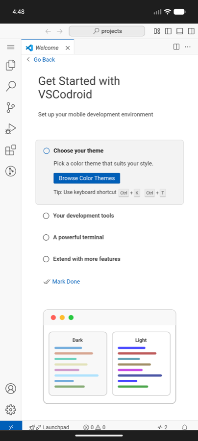
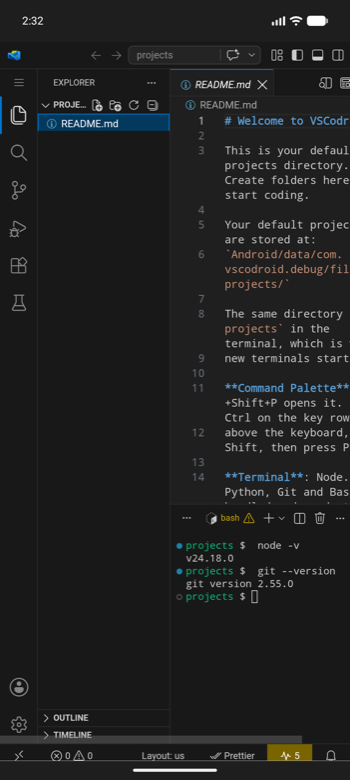
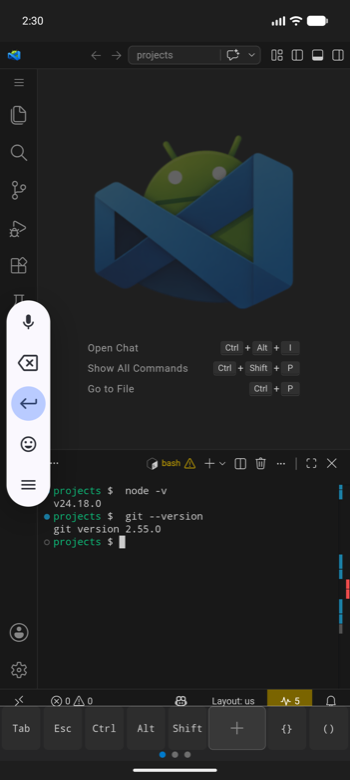
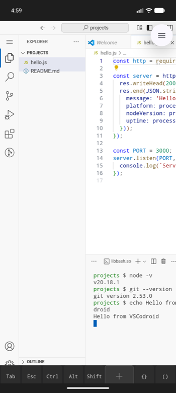
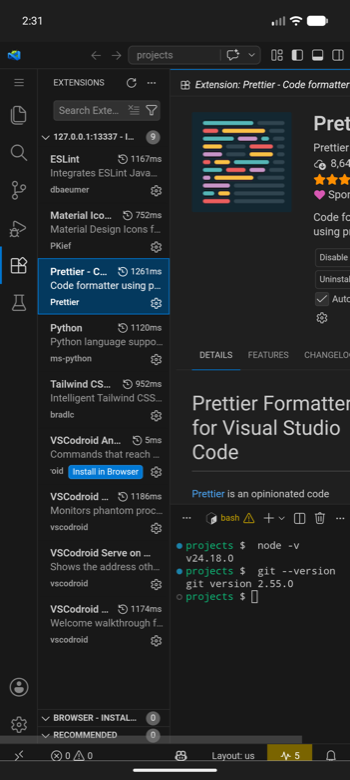

VS Code, on your phone.
Not an editor inspired by it. The real workbench, with a real terminal, running natively on Android.
Android 13 or newer, 64-bit. Around 875 MB free space for the first launch.

What you get
Everything needed to actually work is bundled. There is no setup step, no Termux to install first, and nothing to configure before the first file opens.
-
The real workbench
Built from the MIT-licensed Code - OSS source, so the editor, the command palette, settings and keybindings are the ones you already know.
-
A real terminal
Bash on a proper PTY, with Git, make, ripgrep, tmux and OpenSSH already on the path. Not a shell emulator over a socket.
-
Node.js and Python, bundled
Node 24 with npm, and Python 3 with pip, both installed on first launch. Ruby and Java 17 install on demand when you ask for them.
-
Extensions from Open VSX
Browse and install from the extensions view as usual. Extensions written in JavaScript work; the few that ship a desktop Linux binary do not.
-
Your own files
Open a folder from device storage and edit it in place, or work in the app's own project directory. Both are ordinary folders to the editor.
-
Offline once installed
Nothing phones home. Editing, the terminal and the bundled runtimes all work with the network off; only extensions and package managers need it.
Getting started
Four steps, and only the second one takes any waiting.
-
Install
From Google Play, or by sideloading the APK from GitHub Releases. Both are the same build.
-
Let it unpack
The first launch extracts the editor and the bundled tools behind a progress bar. It happens once, and it needs the space before it starts rather than partway through.
-
Pick your languages
Ruby and Java 17 are offered once, and can be added or removed later from the app icon's long-press menu.
-
Open a folder and work
Use the app's projects directory, or open a folder from device storage. The terminal starts where the editor is.
A look around
Screenshots from a phone, at the size a phone actually shows them.
-

The editor -

The terminal -

The explorer -

Extensions
Worth knowing before you start
Android is not a desktop, and a few things follow from that. The user guide covers each in full.
-
No C compiler
Packages that build native code at install time, anything reaching for node-gyp, will not install. Pure JavaScript and pure Python packages are fine.
-
Toolchains run through the shell
Android refuses to execute files in an app's private storage, so installed tools are reached through shell functions. Typing them, or running them from a task, works.
-
Some extensions cannot work
An extension that ships a compiled desktop Linux binary installs without complaint and then does nothing. The JavaScript ones are the overwhelming majority.